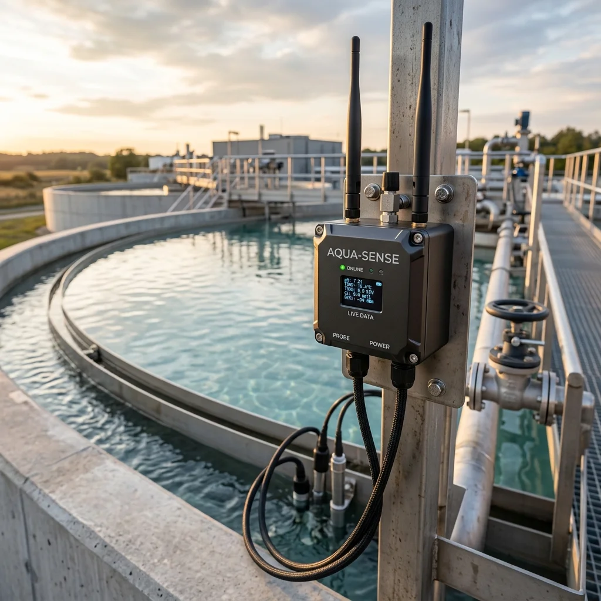

Water Quality
Intelligence.
Every Drop Counts. Jal Rakshak is an advanced IoT-enabled enterprise platform engineered in Visakhapatnam, designed to monitor water quality, flow, usage, and environmental conditions in real time using high-precision telemetry.

Comprehensive Water Intelligence
Jal Rakshak is an end-to-end autonomous water monitoring ecosystem that continuously analyzes vital parameters such as pH, dissolved oxygen, turbidity, and flow rates. Built specifically for municipal water bodies and industrial effluent tracking.
IP67/IP68 Rugged Sensors
Engineered for extreme environments. Our industrial-grade sensors are fully submersible and designed to withstand harsh weather, deep water deployment, and corrosive industrial conditions.
Auto-Calibration Architecture
Advanced auto-calibration algorithms run continuously on the edge to maintain sensor accuracy over long deployments, dramatically reducing manual maintenance requirements.
Data Flow Architecture
How Jal Rakshak acquires, transmits, and analyzes real-time aquatic data from extreme environments.
Multiparameter Floating Buoys
Self-sustainable floating nodes equipped with deep-water submersible sensors (up to 10 simultaneously). Integrated with solar power and battery backups to operate autonomously in lakes, rivers, and effluent tanks.
Wi-SUN & 4G/5G Connectivity
Data is transmitted seamlessly from remote water bodies via Wi-SUN Mesh Networking for long-range communication, backed by built-in GPS and an IoT gateway (4G/5G) to ensure zero data loss during transmission.
Predictive Cloud Dashboards
Data is processed via Edge Computing before being securely routed to a user-friendly cloud dashboard. Stakeholders receive instant SMS/Email alerts if critical parameters exceed safe thresholds.
Target Applications
Municipal Governments
Ensuring safe drinking water supply and monitoring river pollution for urban authorities and NGOs.
Pharma & Manufacturing
Real-time effluent and wastewater tracking to comply with strict CPCB environmental regulations.
Smart Cities
Integrating water quality networks into massive smart-city infrastructure projects.
Agriculture
Monitoring irrigation water purity to maximize crop yields and prevent soil contamination.
Secure Your Water Infrastructure
Deploy our enterprise-grade IoT platform and experience unparalleled visibility into your water resources.
Request a Demo